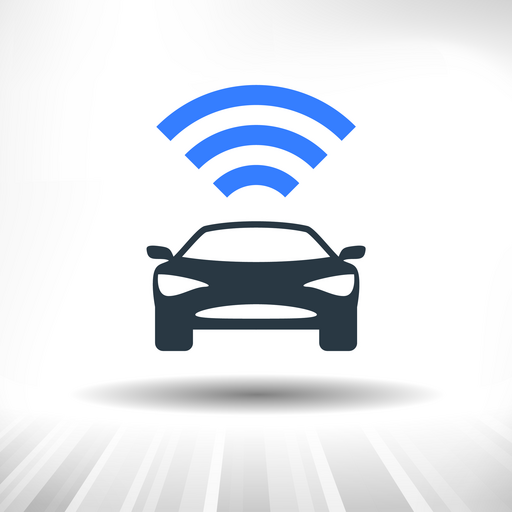

Bluetooth Car
Bluetooth απομακρυσμένος έλεγχος για αυτοσχέδιο όχημα με Arduino — Android.
Screenshots


Περιγραφή
Το Bluetooth Car είναι μια εφαρμογή απομακρυσμένου ελέγχου μέσω Bluetooth, σχεδιασμένη για αυτοσχέδια οχήματα βασισμένα σε Arduino.
Επιτρέπει τον έλεγχο ενός DIY αυτοκινήτου απευθείας από συσκευή Android, μέσω ασύρματης σύνδεσης Bluetooth, προσφέροντας απλό χειρισμό και άμεση απόκριση.
Χαρακτηριστικά
- Bluetooth Remote Control – Απομακρυσμένος έλεγχος οχήματος μέσω Bluetooth.
- Σχεδιασμένη για Arduino – Συμβατότητα με DIY projects.
- Έλεγχος κίνησης – Χειρισμός κατεύθυνσης και κίνησης του οχήματος.
- Απλό περιβάλλον χρήστη – Εύκολη χρήση χωρίς πολύπλοκες ρυθμίσεις.
- Άμεση απόκριση εντολών – Σταθερή επικοινωνία μέσω Bluetooth.
- Ιδανική για πειραματισμό & εκμάθηση – Κατάλληλη για hobby και εκπαιδευτικά projects.
- Διαθέσιμη για Android